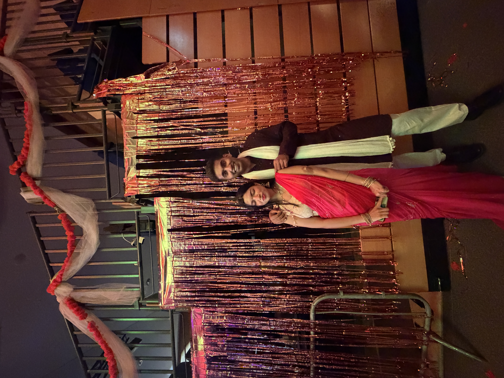
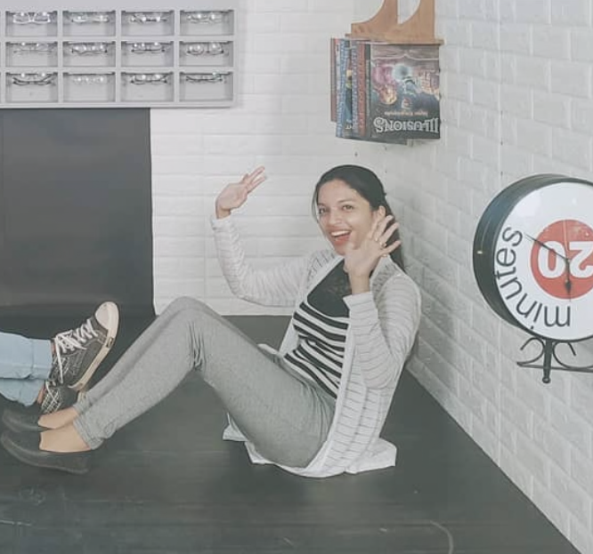
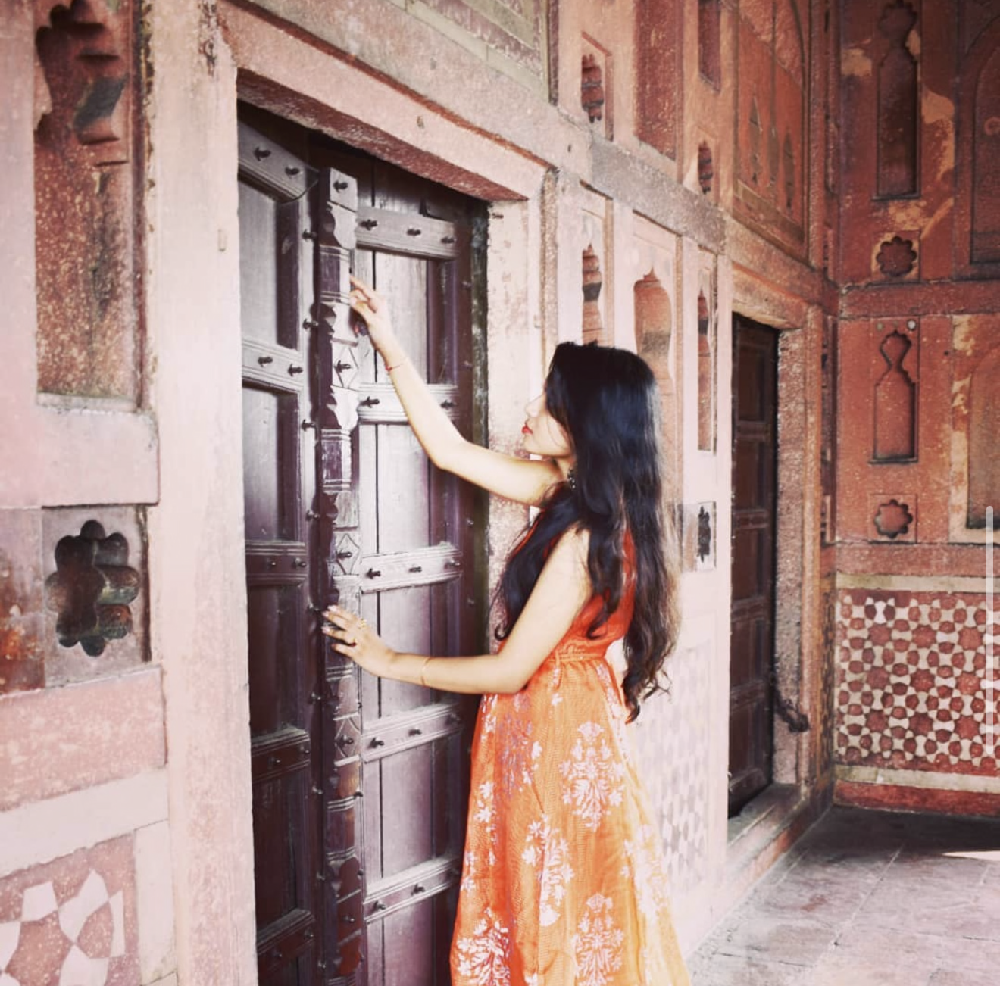
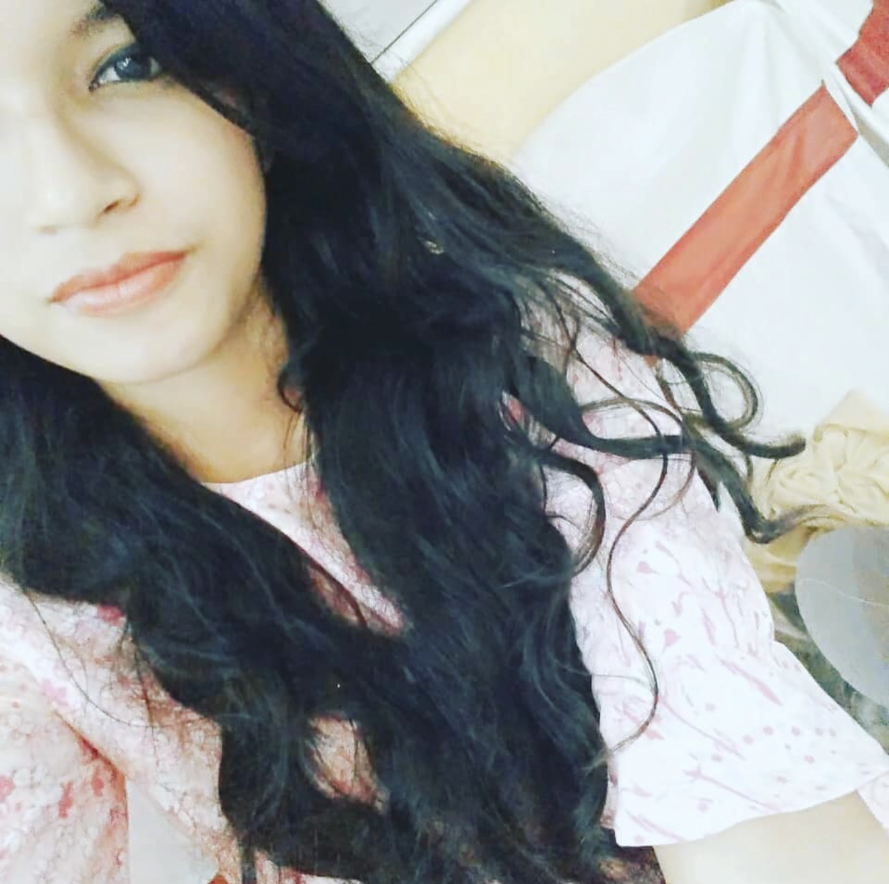
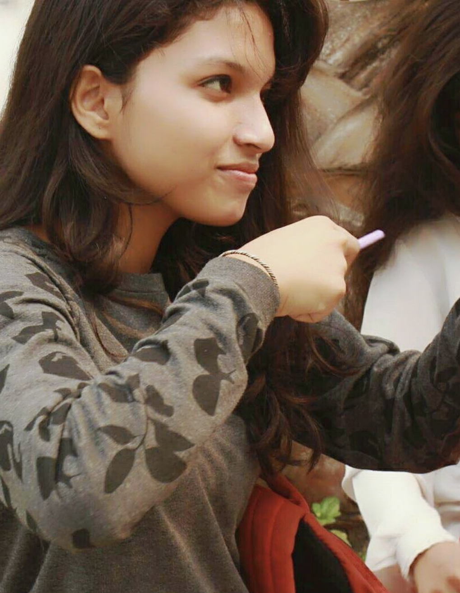
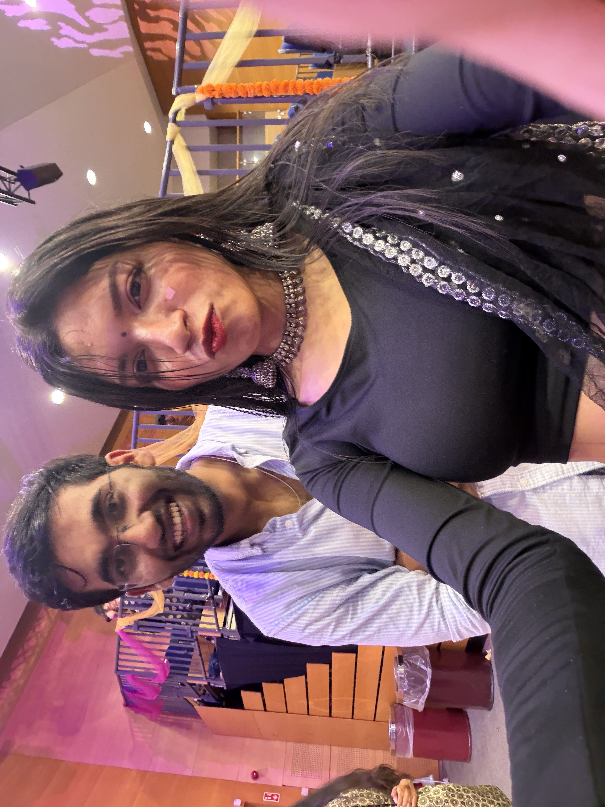
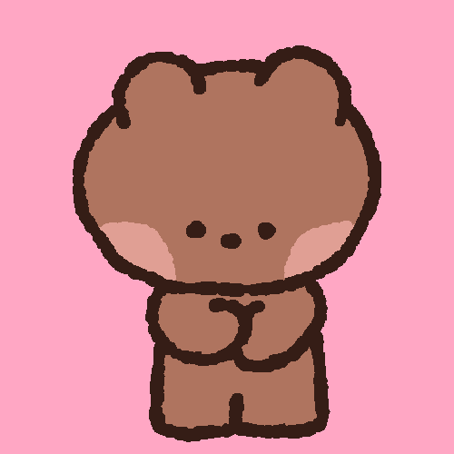

100 reasons why i Love you 💙
tap a photo to see it bigger — scroll pauses itself while you read








- Because you run so fast, faster than the Flash. hehehehe 😂😂
- Real Reasons now ->
- Of course Your Eyes
- You are the sweetest person I have ever met.
- I feel happy from my soul when I am with you.
- I love sitting in peace in the dark, and you sat in the dark with me to watch the stars.
- I wanted to die, but you showed me it's worth living.
- You felt like a place people call home, where i am safe to say or do anything.
- You feel comfortable to share anything, like things I never shared with anyone.
- You are so fucking sweet, But probably that's because you eat lots of it. haha
- You are one of the very very few people I have seen who genuinely cares for others in this selfish world.
- Can't thank enough for talking to me starting to heal some wounds you never gave me.
- You are super smart, probably way smarter than me.
- JUST WATCH THE IMAGES AND LOOK AT YOU, DO I EVEN NEED A REASON.
- Your values and morals.
- That you are also broken like me and not a perfect human being and you accept it.
- How you carry yourself with so much happiness even on hard days when you just wanna go home.
- NEXT TIME - JUST HUG ME
- Whenever you feel low, just say - I WILL COME AND GIVE YOU A BIG LONG HUG.
- ALSO I DEFINITELY NEED HUGS. Don't even remember when i got last one 🥹😭
- LOl, we lost track there.
- I love how passionate and energetic you are when you talk about things you like.
- Your Bad sense of humor. HEHEHE koi ni seekh jaoge mere saath rhke.
- Your comebacks - especially "Jo bolta hai whi hota hai."
- How emotional mature you are, and can say what you feel even when you are hurt.
- How gentle of a person you are.
- YOU IN SAREE 🫠🫠❤️❤️ Makes my heart skip a beat.
- SO GORGEOUS, SO BEAUTIFUL, SO GRACEFUL, SOOO PREEETTTTYYYYYYY ❤️❤️
- Your wisdom towards life.
- Sometimes scary too, ALSO TODAY IS FRIDAY THE 13th. YOU ARE SUPER STRONG.
- JK You feel so safe, you feel like that a super warm blanket on a cold night.
- Your Smile
- Your Smile
- Your Smile
- Your Smile
- Your Smile
- Your Smile
- Your Smile
- Your Smile
- Your Smile
- How comforting it is to feel your presence when we are just sitting alone in silence.
- The way your eyes light up when you smile.
- How beautiful you look at home even in so vibrant colors. GREEN wala sweater is my fav now🫠❤️
- How warm and apnapan it feels when you are there in any event or party.
- I feel a sense of Belongingness when you are there. For the first time in my life.
- how happy you are when you when you are doing something you like.
- How comfortable you are with me so we can bitch about others. Those bisch people.
- How peaceful and sweet you look when you are asleep.
- how safe it feels to open up to you and be myself.
- The efforts you make to reply to every text even stupid ones and every reel i send.
- You have no idea but it makes me feel so happy and appreciated, I love these small gestures to the moon.
- How you still call and talk to me when you are super busy or tired or even both.
- The way you made me breakfast that day🫠❤️.
- the way you forced me to stay because it was raining and you genuinely cared.
- How you stay patient and keep listening to my bad english. LOL
- And how you actually listens and understand.
- How you make ordinary tasks so fun just by being there or just by talking to me on the call.
- Like a simple walk is best walk/ best time just because its with you.
- Lived a movie life scene of riding a bicycle under the moon and the stars.
- With such a beautiful woman sitting behind and holding me.
- How you bring calmness even in complete chaos.
- How you care even when we are in a club with your girl gang and you still care.
- You have no idea how much it means to me.
- Like as a person who doesn't drink or or never been to any club before, I can go to one everyday if its with you.
- How you respects my opinion, never listens but atleast you respect them.
- How you held my hand.
- How you put your head on my shoulders on the beach.
- How I put my head on your shoulder, I never did that before in my life, and it still felt safe and so good.
- How i still pray that you forget your jacket and I can give you mine.
- Love your pimple patches, i know i should not say so, but you still look cute with them.
- I envy your breakfast, how good it looks.🫠🫠
- Your Bathroom singing, my fav bathroom singer of all time.
- How you just call me instead of texting and talk about your day.
- Your pouts for the images and selfies.
- The level of trust we have with each other, I can trust you with my life.
- The way you treat everyone, even a stranger.
- How you wanted help and serve in Gurudwara and you did.
- How you love stargazing like me.
- How comfortable you feel with me that you can make adult jokes that makes me uncomfortable.🫠🫠🫠
- How you believe in old school things, hand written letter and small efforts.
- How you made me feel inclusive in your group always.
- how you just spread positivity around you.
- I love how you are clumsy sometimes.
- How you didn't eat for 2 days but now you are keeping your end of the deal.
- How you are ready to apologize when you think its your fault.
- How you are ready to forgive people. (PS- I KNOW NOT ALL OF THEM💀💀)
- How cheerful and happy every momet gets as soon as you are there.
- How i see my future when you are still there.
- How i wanna go on trips with you.
- How i just wanna see you smile.
- How i just wanna make sure you feel and you are safe.
- I don't know about you, but you being my favorite person and also as my best friend here, it feels so good.
- And how comforting it is.
- How grateful I am that I get off that same bus on that day and our paths crossed.
- How real it feels to be around someone who is just themselves, not acting like someone they are not.
- How it just makes me smile and be happy when i see you.
- How i wait for your call everyday and how it feels like its a bad day when you don't call.
- How every moment I spent with you has become a memory for life.
- To be continued --- I don't wanna end the list of reasons.